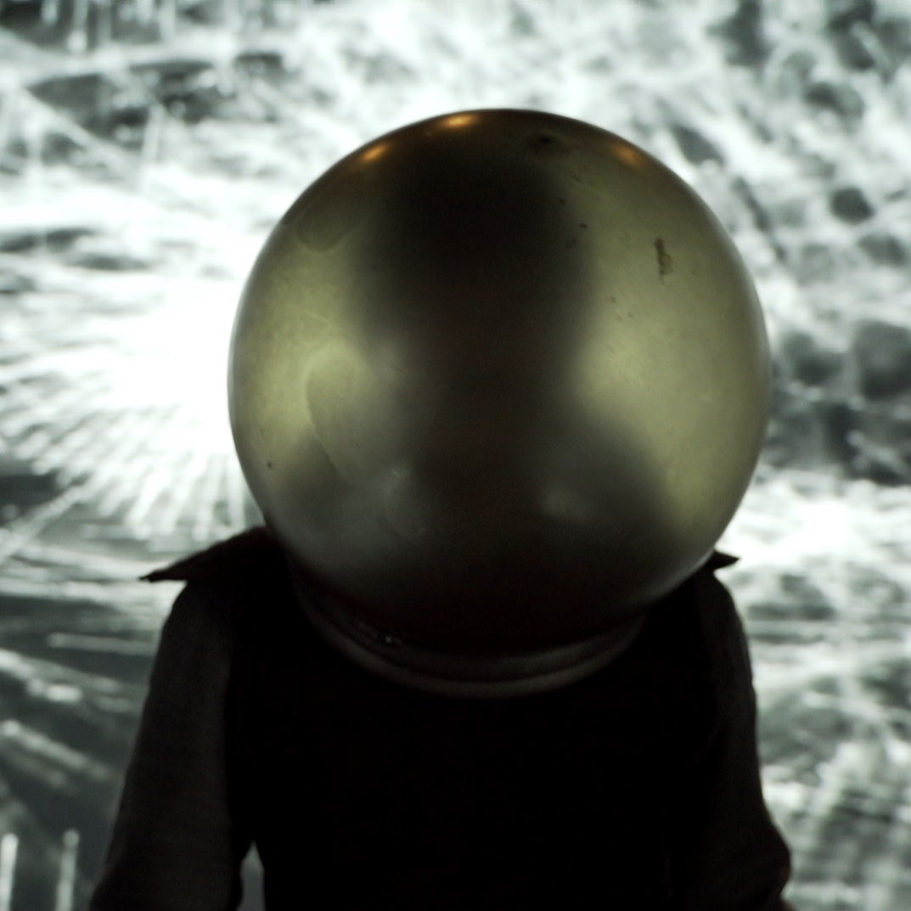

musician, sound engineer and audio programmer based in Bologna (IT).
Working between music producing, live sound engineering and technologies.
|

|
Astolfo 13
Astolfo 13 is a reworking in a contemporary key of some episodes from Ludovico Ariosto's Orlando furioso, proposed through narrative modes derived from oral poetry, the Sicilian cunto and musical theatre, woven into a timeless tale. Characters from different eras overlap in a layered narrative that uses music (performed with traditional and digital instruments), acting, video images and sound processing. The text varies in form and genre, embracing classical and contemporary metrics, verse and prose, and alternates different registers, bringing into dialogue Ariosto's octaves, contemporary Italian and the dialect of Palermo.
The work, after winning the Alberto Dubito Poetry with Music Prize and being performed in studio form as a mise en éspace on a few occasions, won first place in the Sicilia di Scena 2023 call for tenders organised by the Teatro Biondo of Palermo, winning the production prize with which it made its debut at the Teatro Nuovo Montevergini on 21 December, remaining on stage until 30 December.
Production Teatro Biondo Palermo
Project, Dramaturgy Giulio Musso and Federico Pipia
Text Giulio Musso
Direction, Music Federico Pipia
Percussion, Gaita, Lyre, Lute Michele Piccione
Performer Giulio Musso
Costumes Dora Argento
Sound design, Video set design, Live electronics Federico Pipia
Sound tech., lighting Andrea Trona
Assistant director Francesca Melluso
Video executive environment development Giovanni Magaglio
|